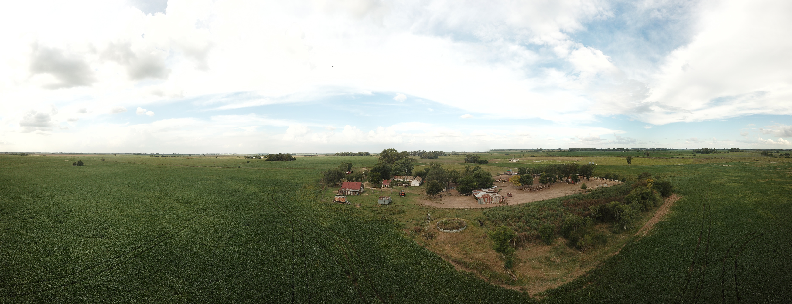
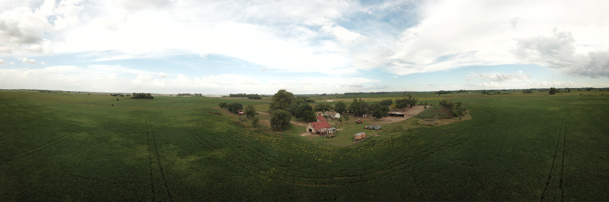

Vuelo de dron: Arq. Santiago Amulet · marzo de 2021
Casco de estancia de origen colonial, posta del Camino Real al Alto Perú y Monumento Histórico Municipal, Provincial y Nacional. Esta web reúne el relevamiento láser y los vuelos de dron de 2021, un siglo de mensuras sobre la imagen satelital, la carta de 1834 y las tres declaratorias. Cada sección es una página: elegí por dónde empezar.
34°19′43″ S · 59°24′22″ O Cuartel VII · Partida 709b Cañada de Giles · Arroyo Suero 8 leguas de la Villa de Luján
Relevamiento con escáner láser (LiDAR), enero de 2021: Arq. Juan Stinchi, en colaboración con la Arq. Victoria Lorenzo.
Vuelos de dron, 4 de marzo de 2021: Arq. Santiago Amulet.
Agradecimiento a la Arq. Micaela Hernández por su ayuda en la declaratoria de Monumento Histórico Nacional.
Realización: Comisión Municipal Asesora del Patrimonio Cultural de San Andrés de Giles.
N
Cargando la nube LiDAR… Arrastrá para girar · rueda o pellizco para acercar · clic derecho o dos dedos para desplazar
Relevamiento láser: Arq. Juan Stinchi, en colaboración con la Arq. Victoria Lorenzo · enero de 2021
Relevamiento 2021
Una nube de puntos para un lugar que se deshace despacio
En enero de 2021 el Arq. Juan Stinchi, en colaboración con la Arq. Victoria Lorenzo, relevó el casco con escáner láser: unas cuarenta y cinco estaciones unificadas en una nube de 103,7 millones de puntos. Arriba se recorre esa misma nube, reducida a 5 millones (un punto cada 12 cm), orientada al norte y ubicada sobre la imagen satelital.
Recorrido por la nube registrada (captura del visor, 1 feb 2021, 51 s).
Una nube de puntos no es una fotografía. Cada punto es una distancia medida y un color tomado: millones de pequeñas certezas que, juntas, devuelven la galería, la reja, la cumbrera, el molino. No hay superficie, hay densidad. Por eso conviene mirarla como se mira un lugar antiguo: de lejos se lee, de cerca se disuelve.
Lo negro del cielo no es noche: es lo que el láser no alcanzó. Las hojas del parral y de los árboles aparecen recortadas porque cada punto es un rebote; donde no hubo rebote no hay nada. Por eso la nube muestra la forma con una precisión que la fotografía no tiene, y a la vez deja ver sus propios límites.
¿Qué se conserva cuando se conserva una medición? La nube guarda la forma del 2021 con precisión, pero no guarda el uso: el mate, el paso de las galeras, el ruido del balde en el jagüel. El registro es memoria, y también es una forma de olvido elegante.
La misma nube coloreada por altura: del rojo del suelo al verde de las copas.
Del archivo de 1,67 GB a la web
El archivo original, Est Figueroa Uni.e57, reúne las estaciones del escáner en una sola nube de 103.756.173 puntos con color. Para poder recorrerla en un navegador se la redujo a un punto por cada cubo de 12 cm: quedan 5,06 millones, que alcanzan para leer muros, aleros, rejas, el molino y cada árbol del monte.
La nube se orientó comparando su planta con la imagen satelital: su eje Y apunta al sur con un desvío de medio grado. Por eso en el visor el norte está arriba y la brújula indica hacia dónde se mira, y en el mapa la planta de la nube calza sobre el casco.
Copia reducida para trabajo en CAD/GIS: «Est Figueroa - nube reducida 12cm.ply», en la carpeta Posta de Figueroa.
Estaciones del escaneo láser
Patio y bajo de la cañada, 23 ene 2021.Techumbre: tirantería de madera, cañas y tejas francesas, 23 ene 2021.
4 de marzo de 2021 · 16:19 a 17:09
El casco visto desde arriba
Veintiséis vuelos en cincuenta minutos, realizados por el Arq. Santiago Amulet. Desde el aire la estancia es lo que siempre fue: una isla de árboles en la llanura cultivada, junto a la cañada.

Panorámica aérea 1 (21 tomas unidas) · arrastrá para recorrer · rueda para acercar

Panorámica aérea 2 · el casco, el monte y la llanura hasta el horizonte
DJI_0097 · el casco desde el noroeste: casa principal, dependencias, molino y galpón de techo rojo (18 s).DJI_0110 · vuelo bajo sobre galpón y depósito, 4K (13 s).DJI_0098 · la llanura hacia el norte (8 s).DJI_0099 · a ras de la soja, con el monte del casco de fondo (12 s).
Las trayectorias de los vuelos, tomadas del registro GPS de cada video, están en el mapa como capa. Una advertencia: el dron anota la posición con cuatro decimales, es decir con unos diez metros de error. Sirve para saber desde dónde se miró, no para medir.
Atlas de Mensuras de Giles · 1826–1923
El suelo medido
Ciento noventa duplicados de mensura sobre la imagen satelital actual. Mové el año y mirá cómo la suerte de estancia de los Figueroa se fue partiendo y qué caminos anotaron los agrimensores.
—
Mensuras hasta
Capas
Tocá una parcela
Cada polígono es un duplicado de mensura georreferenciado: titular, año, agrimensor y superficie.
El plano más antiguo de la propiedad es la mensura de Manuel Eguía, 1840 (Mensura 10), hecha a la muerte de don Mauricio Figueroa: allí la estancia «La Merced» aparece a nombre de su viuda, Isabel Carrasco, sobre el «camino de la posta». El Registro Gráfico de 1864 vuelve a mostrar las tierras; hacia 1890 la titular es Trinidad Morales de Figueroa; la mensura de 1923 rotula el camino como «Posta Figueroa».
La lectura del atlas no es neutra. Una mensura fija un límite donde antes había un uso; convierte la cañada en lindero y el camino en servidumbre. Cada línea que el agrimensor traza es también una decisión sobre quién queda adentro.
Duplicados de mensura Nº 10 (1840) y Nº 175 (1897), Archivo Histórico de Geodesia.
Duplicados de mensura en el Archivo de Geodesia
Camino Real al Alto Perú · abierto en 1663
Tres o cuatro leguas: la medida de un caballo
Una posta existía porque un animal se cansaba. La distancia entre postas era la que un caballo podía correr sin recambio.
Distancias según el libro de 1989 sobre la Carta Postal de N. Grondona (c. 1863). 1 legua ≈ 5,2 km.
Las fuentes no coinciden. El libro de 1989 ubica la posta a tres leguas de la del Sauce y a cuatro de la del Río Areco; el Decreto 616/2021, que cita la misma Carta Postal, dice lo contrario: cuatro y tres. La diferencia es de una legua, una hora de galope. Vale la pena volver al plano de Grondona antes de fijar cualquiera de las dos en una placa.
1769 — 1852
Chasquis y postas
Desde 1769, con Domingo de Basavilbaso, las postas pasan a ser servicio de la Corona: ranchos de adobe o quincha, corral de palo a pique, pozo y horno. La «Posta de Figueroa» no figura en el servicio oficial de las primeras décadas del XIX, lo que no impide que la estancia ofreciera recambio y descanso.
1852 — 1880
Mensajerías y galeras
Tras Caseros se ordenan itinerarios y servicios. Diez a quince pasajeros en cupé, rotonda o pescante, junto al mayoral. El Anuario de 1859 nombra una «Posta del arroyo de Giles» en la carrera a Pergamino; Grondona, en 1863, una «Posta de Giles».
1880 —
El ferrocarril
Con la estación Azcuénaga del F.C. Oeste y su estafeta de correos de 1880, la posta deja de operar. La memoria popular conserva que allí se recibía la correspondencia de la zona rural.
«Por la tarde nuestro postillón, que según pudimos luego comprobar ignoraba la verdadera ruta, se detuvo ante una casa de agradable aspecto, diciéndonos que habíamos llegado a la posta. Los dueños de casa nos sacaron del error… pero al mismo tiempo nos invitaron bondadosamente a desmontar y a participar de un asado.»William Mac Cann, viaje al norte, 22 de noviembre de 1847
El fragmento de Mac Cann es probablemente la mejor definición de posta que tenemos: un lugar donde uno llega por error y lo reciben igual. La hospitalidad era infraestructura antes de que hubiera infraestructura.
Las postas también eran puntos de control. Por el mismo camino por donde pasaba la carta pasaban las levas, las caballadas «donadas» al gobierno y los presos. En 1835, según la tradición local, el general José María Paz estuvo detenido en La Merced. La posta servía al que viajaba y al que vigilaba.
1663 — 2021
Dos siglos y medio en una misma familia
Hacienda de Figueroa · 20 de diciembre de 1834
La Carta de la Hacienda de Figueroa
Rosas y Quiroga se separaron aquí al amanecer del 18 de diciembre. Dos días después Rosas terminó esta carta y un chasque la llevó hasta alcanzar a Facundo más allá de Córdoba. Viajaba con ella cuando lo mataron en Barranca Yaco.
Evangelii gaudium 217–237 · Laudato si’
Lo que una carta federal le dejó a un papa
Juan Carlos Scannone SJ señala que los cuatro principios de Bergoglio fueron explicitados por el jesuita Ernesto López Rosas a partir de su puesta en práctica implícita en esta carta, «enviada desde la hacienda de Figueroa».
1834
Rosas a Quiroga, desde La Merced.
s. XX
Ernesto López Rosas SJ lee en la carta cuatro criterios de construcción de un pueblo.
1974
Bergoglio, provincial, los usa ante la Congregación Provincial (18 feb).
2010
«Nosotros como ciudadanos, nosotros como pueblo», hacia el Bicentenario.
2013
Lumen fidei 55 y 57; Evangelii gaudium 217–237.
2015
Laudato si’ 110, 141, 178, 198: la ecología integral.
I · EG 222–225 · LS 178
El tiempo es superior al espacio
«Dar prioridad al tiempo es ocuparse de iniciar procesos más que de poseer espacios.»
«Entre nosotros no hay otro arbitrio que el de dar tiempo a que se destruyan en los Pueblos los elementos de discordia… Esto es lento a la verdad.»
La pregunta. Para el revisionismo histórico, «dar tiempo» no fue postergar la Nación sino dejarla nacer: el Pacto Federal de 1831 ya era su constitución viva, y Caseros, en 1852, cortó ese proceso con armas del Imperio del Brasil para imponer una ley pensada en otra parte. ¿Qué procesos de nuestro tiempo apuramos por ansia de ocupar espacios, y cuáles nos animamos a dejar madurar?
II · EG 226–230 · LS 198
La unidad prevalece sobre el conflicto
Aceptar sufrir el conflicto, resolverlo y transformarlo en el eslabón de un nuevo proceso: una «diversidad reconciliada».
«La unión y tranquilidad crea el Gobierno general, la desunión lo destruye; él es la consecuencia, el efecto de la unión, no la causa.»
La pregunta. La dureza de la carta es la de un país en guerra civil y acechado desde afuera. Allí se lee una unión que nace de la paz entre los pueblos y no de un centro que la impone. Esa unión se puso a prueba en la Vuelta de Obligado, en 1845, frente a las escuadras de Francia e Inglaterra, y San Martín legó su sable a Rosas por sostener la soberanía. ¿Qué causa común nos devolvería hoy la capacidad de reconocernos parte de lo mismo?
III · EG 231–233 · LS 110, 201
La realidad es más importante que la idea
Contra «los purismos angélicos, los nominalismos declaracionistas, los proyectos más formales que reales».
«¿Habrá quien creerá que el remedio es precipitar la Constitución del Estado?… alborotando los Pueblos con el grito de “Constitución”.»
La pregunta. Frente al país de los doctores, que querían dictar la Nación desde el papel, está el país real de provincias pobres, caudillos y paisanos del que partía Rosas. La Constitución de 1853 se calcó del molde norteamericano sin preguntarle a esa realidad. ¿Cuántas normas se siguen escribiendo para un país imaginado y no para el que se habita en lugares como esta posta?
IV · EG 234–237 · LS 141
El todo es superior a la parte
El modelo es el poliedro, que conserva la originalidad de cada parte; no la esfera, donde todo equidista del centro.
«¿Quién para formar un todo ordenado y compacto no arregla primeramente… las partes que deben componerlo?»
La pregunta. Carta y papa dicen lo mismo: el todo no se decreta, se compone. Rosas pide ordenar primero las partes; Francisco propone el poliedro, donde cada parte conserva su forma. En esa federación de pueblos late la verdadera tradición nacional. ¿No es el pago, la posta, el partido, la parte desde la que se arraiga el todo? «Hundir las raíces en la tierra fértil y en la historia del propio lugar» (EG 235).
Por qué importa para el patrimonio
En Laudato si’ 143, Francisco escribe que junto con el patrimonio natural hay un patrimonio histórico, artístico y cultural igualmente amenazado, y que hay que incorporar la historia, la cultura y la arquitectura de un lugar para preservar su identidad original. La ecología, dice, también es cultural.
La Merced es un caso raro de esa ecología: una casa modesta, de muros de adobe y ladrillo asentado en barro, que no fue palacio, en la que se escribió un texto del cual, ciento ochenta años después, salió una manera de pensar el pueblo. El edificio no explica la idea. Pero la idea tampoco se entiende del todo sin el lugar: lenta, de a pie, a la distancia que un caballo puede correr sin recambio.
Leer la carta desde Francisco no la absuelve, y leer a Francisco desde la carta no lo reduce. Rosas escribía para conservar un orden; Bergoglio extrajo de ese texto criterios para abrir procesos. Entre los dos está el trabajo de la memoria: ¿qué se hereda de un documento cuando se hereda su método y no su causa?
Fuente principal: J. C. Scannone SJ, «Cuatro principios para la construcción de un pueblo según el Papa Francisco», Stromata 71 (2015) 13–27, nota sobre E. López Rosas y E. Barba, Correspondencia entre Rosas, Quiroga y López, 1984, p. 94.
CAPBA Distrito V · Mercedes, 1989
«Pequeño testimonio de una gran historia»
El relevamiento de 1989 dibujó la estancia a mano: el paisaje, las especies, la evolución del casco, la reja, la estructura de la cubierta.
El libro reconstruye tres momentos del conjunto. Hacia fines del siglo XVIII la población es un refugio frente a la pampa sin límites: rancho, horno de barro, jagüel con balde volcador de cuero, montículos defensivos y una zanja. Desde 1870 llegan el alambrado y, hacia 1880, el molino con tanque australiano; el casco se vuelve un oasis arbolado. En el siglo XX los galpones se apartan y una playa arbolada organiza el conjunto.
La casa principal muestra dos construcciones unidas, legibles en la fisura del muro, la cornisa discontinua y el cambio de espesores: ladrillo asentado en barro, revoques de cal, tejas francesas Pierre Sacoman sobre ladrillos cerámicos de 34 × 17.
Coordinación general: Carlos Moreno, arq. (Centro para la Conservación del Patrimonio Urbano-rural, FADU). Comisión coordinadora: Silvia Baccino, María Luisa Sorolla y Ana Leonor Chotti, arqs. (Colegio de Arquitectos, Distrito V).
Por San Andrés de Giles participaron Hugo Addesso, arq., coordinador local, y Juan Patricio Addesso, entonces estudiante de enseñanza media, junto con integrantes del Centro de Estudios Históricos (Héctor R. Terrén, Graciela León), José M. Sosa, María F. García y Rolando Silla, entre otros.
Treinta y dos años después, el relevamiento láser de 2021 vuelve sobre los mismos muros. El dibujo y la nube de puntos son dos maneras de prestar atención.
Comisión Nacional de Monumentos · 7 de junio de 2021 · Expte. EX-2018-35095348
Estado de conservación: un patrimonio del trabajo vivo
El informe que acompañó la declaratoria nacional comparó el relevamiento de 1989 con el video de dron, las fotografías y el escaneo de 2021. Su conclusión: forma bien conservada, materia con deterioro mediano por falta de mantenimiento.
Fachadas N, S y O sin alteraciones
Casa principal
Muros de ladrillo de 39 × 19,5 × 5 asentados en barro, estructura de par y nudillo, tejas francesas Pierre Sacoman de la segunda mitad del XIX. Una cercha de «cuchillo» con huecos que sugieren un uso naval anterior. En la fachada este, un pequeño volumen adosado donde había una ventana. Faltan tejas en la esquina del alero norte.
Cambios menores
Dependencias
Mampostería de 32 × 16 × 4,7 en barro, con huecos de mechinales. Una ventana del este convertida en puerta, un vano nuevo al oeste y nichos bajo el alero norte: operaciones del habitar que no alteran la forma.
Gallinero desaparecido
Depósito
Ladrillos de 30 × 15 × 5 en barro con restos de tejas «musleras». El volumen del gallinero ya no existe; al oeste una ventana se volvió portón y al norte se cerró un vano.
Cuatro fachadas intactas
Galpón
Cerchas de pino tea, mampostería con pilastras en los apoyos. Al oeste se adosó una cubierta de chapa sobre estructura de madera, fácil de retirar.
«Estamos hablando de un patrimonio del trabajo vivo, vigente, que al día de hoy conserva en su materia el mensaje de los primitivos asentamientos productivos agropecuarios.»CNMLBH, Informe del estado de conservación, 2021
La reja del aposento, de hierro forjado, remata en una flor de lis, el emblema de los Borbones: el poder de una corona en el detalle de una ventana rural. El informe destaca otra cosa que no se ve en los planos: la continuidad del uso, más de dos siglos de una misma familia trabajando el mismo campo.
Si lo valioso es el trabajo vivo, ¿qué pasa con la declaratoria el día que ese trabajo se detenga? La ley protege la materia; el uso no se puede decretar. El riesgo de un monumento rural es quedar intacto y vacío.
Fachadas en 2021
Páginas del informe
Registro del Patrimonio Cultural de San Andrés de Giles · asiento 1
Tres declaratorias, un mismo casco
Municipal · 7 jun 1988
Ordenanza 49/88
Declara Monumento Histórico a nivel municipal a la Estancia «La Merced» o Posta de Figueroa. Promulgada por decreto 182 del 9 de junio de 1988 (intendente Aldo Nascimbene).
Provincial · 1990
Ley 10.965
Monumento Histórico Provincial de Buenos Aires.
Nacional · 10 sep 2021
Decreto PEN 616/2021
Monumento Histórico Nacional; con el sepulcro de Enrique José de Larrañaga (Sepulcro Histórico Nacional, Dec. 633/2017), uno de los dos bienes del partido con declaratoria nacional, y el único edificio. Declara el casco de la Estancia «La Merced» (Circ. VII, Polígono V, Parcela 709). Propuesto por la CNMLBH en el Acta Plenaria Nº 7 del 19 de agosto de 2015; publicado en el Boletín Oficial el 13 de septiembre de 2021.
Agradecemos a la Arq. Micaela Hernández por su ayuda en la gestión de esta declaratoria.
Texto de la Ordenanza 49/88
Declárese Monumento Histórico a nivel Municipal a la Estancia «La Merced» o «Posta de Figueroa».
El Departamento Ejecutivo tendrá a su cargo el mantenimiento de la misma, la cual consistirá en el blanqueo, limpieza, etc., cuando fuere necesario.
El Departamento Ejecutivo fijará una fecha (no mayor a los 90 días) para un acto de reconocimiento del significado histórico de «La Merced», inaugurándola como «Monumento Histórico de San Andrés de Giles».
Se dará amplia difusión a tal evento.
Se solicitará al C.I.E. local y al Centro de Estudios Históricos «Pbro. Vicente Piñeiro» un plan educativo conjunto para difundir el lugar y realizar visitas guiadas.
El Departamento Ejecutivo pondrá a disposición de las escuelas el ómnibus municipal para realizar lecciones-paseos a «La Merced».
Las lecciones-paseos serán extensibles a jubilados, instituciones, etc.
El Departamento Ejecutivo dará amplia difusión a la presente y atribuirá las medidas para su mejor organización.
De forma.
Plano de mensura y división 94-40-72
Mensura y división «próximo a Estación Azcuénaga», Circunscripción VII, parcelas 709 a, b y c (escala 1:7500). Una restricción anotada al margen pesa hoy sobre el casco: no se puede levantar edificación estable en una franja de cien metros a ambos lados del borde superior del arroyo Suero.
Situación en el Registro
Categoría 1 · Histórico-Simbólico. Registro Definitivo: anterior a la Ordenanza 2182/19, incorporada de pleno derecho por su art. 8, último párrafo. Circunscripción VII, partida 709b (a verificar registralmente). La declaratoria nacional vale en su propio ámbito.
La ordenanza de 1988 pedía blanqueo, visitas escolares y un ómnibus. Tres décadas después, la casa es Monumento Histórico Nacional y sigue siendo vivienda de los descendientes de Tomás de Figueroa. ¿Cómo se cuida un monumento que es también una casa habitada? La protección que vale es la que no convierte a la familia en guardiana de un museo.
Archivo
Fuentes
«La Merced, Hacienda de Figueroa. Pequeño testimonio de una gran historia». Patrimonio Rural, Colegio de Arquitectos de la Provincia de Buenos Aires, Distrito V, Mercedes, 1989. Archivo CMAPCSAG.
Carta de Juan Manuel de Rosas a Juan Facundo Quiroga, Hacienda de Figueroa, 20 dic 1834. AGN, Colección Saldías, Sala VII Nº 229, ff. 179–184. Texto según R. Levene, p. 246.
Inventario y partición de bienes quedados por muerte de Tomás de Figueroa, 1759. AGN, Sucesiones, legajo 5874.
Duplicados de mensura Nº 10 (Eguía, 1840), 43 (1867), 62 (1872), 161 (1857), 175 (1897), 189 (1923). Archivo Histórico de Geodesia; Atlas de Mensuras de Giles.
J. C. Scannone SJ, «Cuatro principios para la construcción de un pueblo según el Papa Francisco», Stromata 71 (2015) 13–27.
Relevamiento láser de la Posta de Figueroa: «Est Figueroa Uni.e57», 103.756.173 puntos, enero–febrero 2021. Vuelos de dron DJI_0095 a DJI_0123, 4 de marzo de 2021. Comisión Municipal Asesora del Patrimonio Cultural de San Andrés de Giles.
Comisión Nacional de Monumentos, de Lugares y de Bienes Históricos, «Informe del estado de conservación del Casco de la Estancia La Merced», 7 de junio de 2021 (Expte. EX-2018-35095348-APN-CGD#MC).
Plano de mensura y división 94-40-72, San Andrés de Giles, Circunscripción VII.
Archivo General de la Nación, Programa de Descripción Normalizada: Sala VII, Documentación Donada y Adquirida, vol. 3, tomo I (2014), descripción de la colección Adolfo Saldías–Juan Ángel Farini; Salas X y III, vol. 2 (2012).
Créditos y agradecimientos
Relevamiento con escáner láser (LiDAR), enero de 2021: Arq. Juan Stinchi, en colaboración con la Arq. Victoria Lorenzo.
Vuelos de dron, 4 de marzo de 2021: Arq. Santiago Amulet.
Agradecimiento a la Arq. Micaela Hernández por su ayuda en la declaratoria de Monumento Histórico Nacional.
Realización: Comisión Municipal Asesora del Patrimonio Cultural de San Andrés de Giles.
El relevamiento láser fue realizado por el Arq. Juan Stinchi en colaboración con la Arq. Victoria Lorenzo; los vuelos de dron, por el Arq. Santiago Amulet. La nube 3D proviene de «Est Figueroa Uni.e57», reducida a vóxel de 12 cm y georreferenciada por correlación con la imagen satelital (error estimado de algunos metros). El panorama 360° se compuso con los cuadros de la grabación del visor de la nube (1 feb 2021). Imagen satelital: Esri World Imagery (Maxar, Earthstar Geographics), embebida en tres escalas.